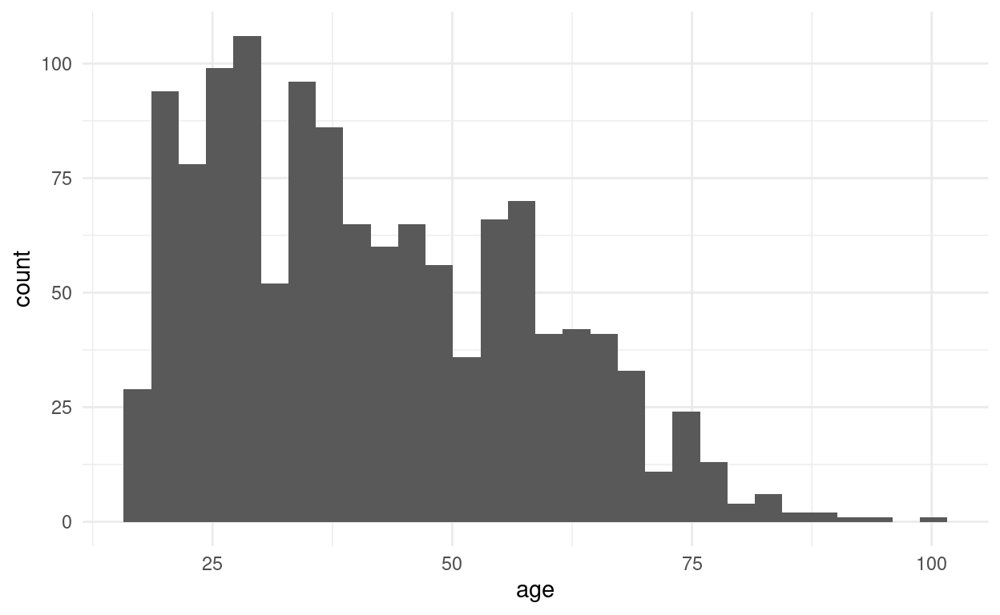
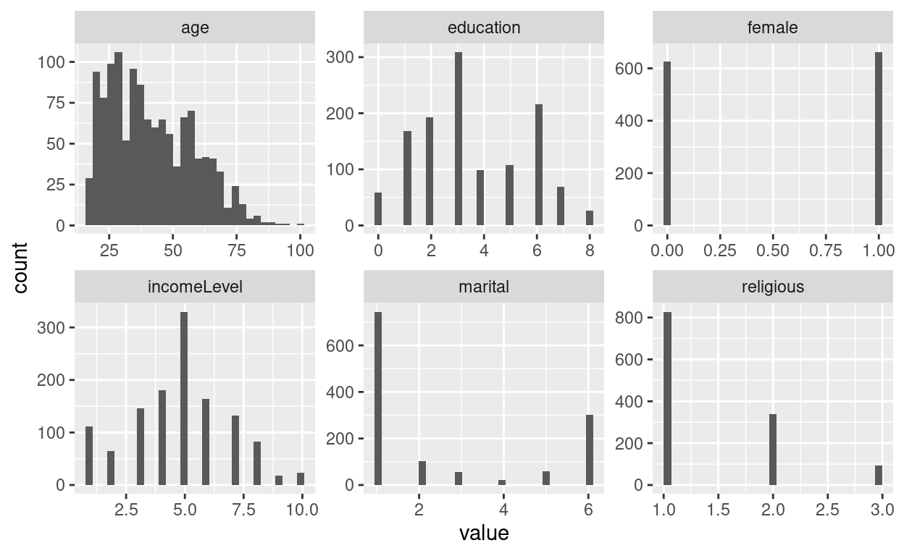
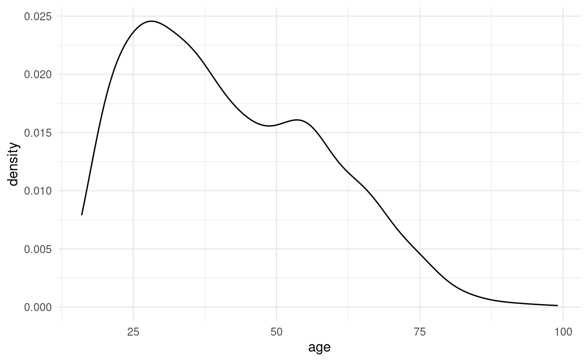
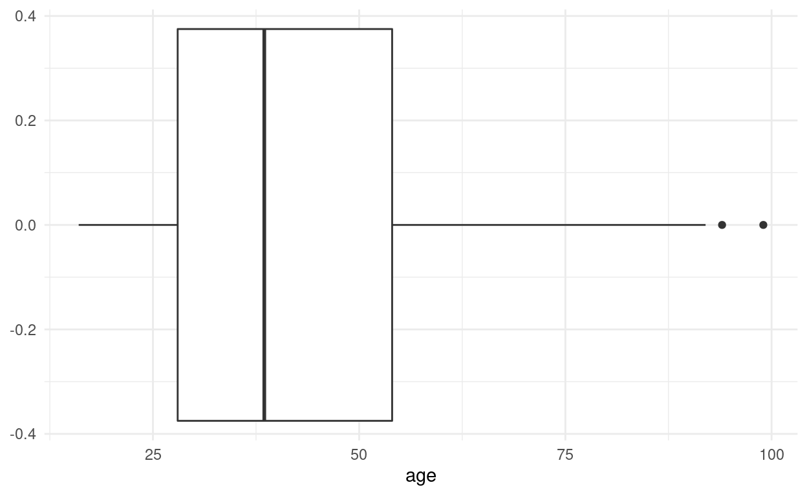
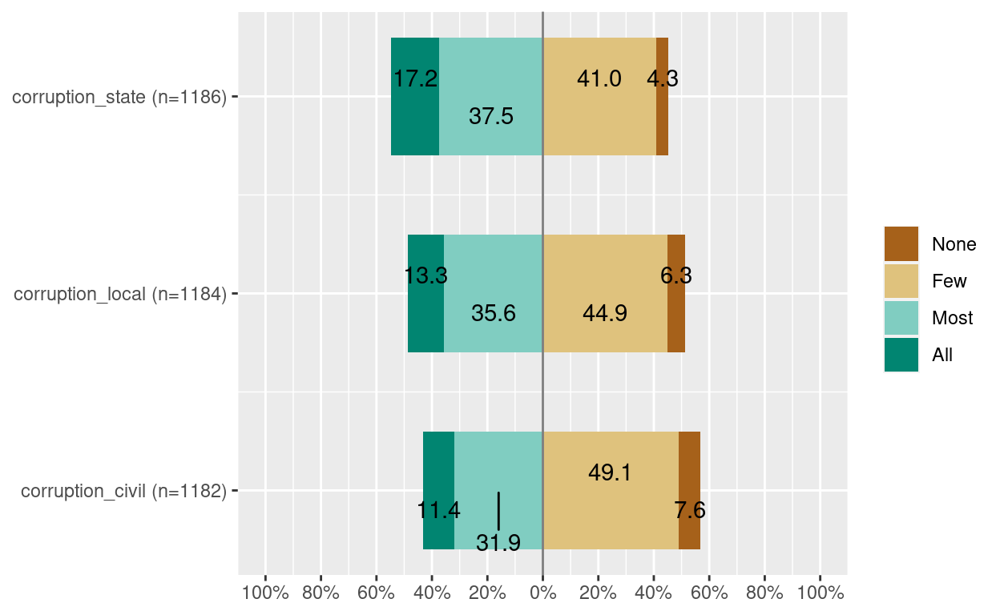

知识点
- 变量描述
- 原始数据
- 矩
- 数据描述
- 数据框
- 数据信息
- 可视化
- 表
- 图
演示数据
我们在这部分继续使用WVS7的一个样本进行演示。
具体变量信息可通过?drhur::wvs7查看。
library(drhur)
data("wvs7")变量描述
原始数据
很多研究者喜欢看更为原始的数据。 在这里我们介绍两种直接看数据的方法：
第一，直接输入数据名称
wvs7$age## [1] 66 34 47 51 45 61 50 48 52 42 53 33 49 49 57 63 68 56 66 19 33 50 35 28 38 48 67
## [28] 24 30 53 35 33 62 79 19 48 33 45 51 49 72 37 54 47 52 33 75 55 50 52 60 42 63 60
## [55] 78 64 41 23 31 56 52 49 48 48 69 56 83 57 18 24 70 58 54 58 60 24 25 40 26 23 55
## [82] 55 36 36 50 39 32 23 28 20 51 28 28 48 20 26 57 25 18 37 30 45 51 47 38 22 64 55
## [109] 69 45 34 24 21 28 56 18 18 56 56 40 20 28 24 50 73 24 67 30 45 33 28 40 44 19 31
## [136] 48 52 20 42 60 59 63 35 30 37 24 37 73 26 54 17 49 36 40 17 32 39 20 27 23 38 61
## [163] 34 42 45 34 46 22 36 58 42 29 19 18 29 58 50 36 45 25 68 57 38 53 22 45 40 35 41
## [190] 45 36 29 40 32 27 52 38 20 49 20 55 58 65 50 42 44 18 38 32 36 26 21 37 32 40 18
## [217] 22 18 46 59 30 38 57 36 27 39 63 27 42 62 39 39 28 33 19 24 60 24 50 31 60 25 20
## [244] 59 37 23 47 18 23 25 33 53 63 42 32 22 46 39 22 41 20 54 41 37 54 72 45 26 65 54
## [271] 55 59 30 37 78 29 24 49 27 25 77 53 56 50 57 59 19 47 24 64 35 47 24 19 24 30 58
## [298] 60 22 28 52 38 21 33 45 19 22 46 36 29 70 45 18 43 42 21 32 25 25 19 51 60 24 38
## [325] 46 22 56 72 51 27 57 78 24 34 77 69 68 37 83 82 20 50 43 41 85 51 19 32 35 50 40
## [352] 43 35 58 48 45 56 51 69 36 25 53 48 49 33 40 32 39 40 51 85 61 63 50 32 20 25 61
## [379] 18 27 49 32 26 29 42 57 32 69 31 18 20 34 74 32 33 28 19 25 45 18 41 35 42 25 48
## [406] 59 48 43 33 75 41 52 40 29 38 38 24 35 41 43 29 54 27 51 51 58 41 34 28 38 32 47
## [433] 47 57 26 27 38 38 60 54 58 33 40 44 18 31 28 36 67 18 22 47 41 24 35 59 49 61 52
## [460] 45 45 30 19 21 68 48 19 48 65 42 60 21 38 73 51 19 40 32 36 41 21 54 64 19 38 38
## [487] 67 41 19 36 36 18 39 28 33 39 63 41 25 54 28 32 60 36 39 44 23 43 63 20 42 46 45
## [514] 38 48 21 21 82 64 34 42 35 77 35 60 58 74 59 51 69 45 43 63 53 28 35 55 52 53 41
## [541] 67 77 61 28 24 52 40 52 35 22 43 36 32 22 21 51 38 31 44 32 57 47 50 65 34 50 66
## [568] 26 28 64 54 68 47 31 56 31 21 35 68 21 51 29 40 26 61 24 28 45 48 59 39 58 26 45
## [595] 34 33 63 62 55 26 44 63 61 30 60 52 41 64 21 25 29 62 35 59 45 32 34 60 28 46 31
## [622] 30 44 64 33 24 52 56 62 40 21 23 50 28 68 60 33 24 27 20 55 48 22 62 62 26 30 27
## [649] 32 49 29 27 43 58 41 58 32 31 42 41 34 33 47 22 51 26 NA 21 55 20 42 40 60 20 NA
## [676] NA 54 20 69 NA NA 22 25 33 28 34 35 55 38 39 22 20 36 20 31 28 27 45 56 21 33 37
## [703] 39 25 38 28 55 44 24 19 39 37 39 23 50 50 52 33 66 77 21 27 56 68 70 74 65 49 75
## [730] 28 35 44 27 35 60 29 34 31 68 52 54 33 28 61 55 37 56 27 57 61 66 75 25 59 57 58
## [757] 78 63 50 69 60 81 68 81 78 68 36 63 20 24 33 19 17 17 35 42 55 37 71 24 45 51 34
## [784] 17 30 34 40 52 18 44 20 22 28 25 40 20 43 28 26 30 24 25 41 18 32 42 45 29 40 34
## [811] 33 30 27 64 37 22 25 50 35 36 19 21 45 27 54 25 21 65 22 28 31 28 30 48 60 49 25
## [838] 21 50 26 40 40 30 30 55 35 28 35 38 25 38 50 48 31 41 32 61 50 47 38 23 53 44 32
## [865] 21 35 33 50 20 37 48 60 40 27 51 25 34 65 22 79 70 48 53 50 18 40 49 19 49 31 36
## [892] 36 78 54 43 37 36 55 21 44 54 43 30 25 35 34 61 53 47 63 71 79 55 40 54 18 23 83
## [919] 36 64 40 72 66 27 49 22 52 45 75 32 72 56 81 75 61 NA 26 22 62 65 43 43 81 40 23
## [946] 69 44 55 23 20 62 40 40 57 50 35 35 38 18 49 51 59 57 30 62 65 74 52 30 72 37 50
## [973] 42 36 55 33 76 46 59 42 75 30 41 44 28 42 23 23 56 34 60 45 51 46 72 29 56 31 43
## [1000] 72 66 68 22 46 35 20 53 33 38 75 30 26 29 76 35 32 38 44 36 31 24 47 34 20 24 45
## [1027] 45 33 49 19 30 51 29 38 27 57 18 26 28 58 57 45 31 45 55 60 42 54 22 50 22 51 35
## [1054] 21 45 38 24 50 28 56 41 78 22 29 27 58 51 32 39 44 24 66 31 24 46 35 55 70 20 39
## [1081] 50 54 32 19 74 30 20 39 21 53 66 48 65 50 39 50 48 27 40 51 48 28 66 61 56 38 53
## [1108] 63 26 53 44 20 37 43 60 36 19 61 21 30 45 23 48 57 58 18 79 57 48 53 67 94 60 70
## [1135] 44 21 28 35 36 60 35 44 55 38 56 55 55 22 60 24 25 25 27 25 58 22 28 41 46 65 57
## [1162] 24 27 35 56 24 44 21 40 55 52 55 55 25 24 20 56 54 45 35 30 35 24 47 40 19 59 25
## [1189] 59 20 35 50 40 32 35 45 58 18 46 55 38 31 21 42 38 50 59 18 52 56 25 34 21 36 32
## [1216] 35 56 24 48 35 43 26 64 23 46 58 48 51 37 22 38 22 40 28 71 54 29 33 62 37 18 44
## [1243] 29 24 18 33 37 27 54 78 65 24 36 23 55 34 31 55 43 34 62 20 44 78第二，head/tail
head(wvs7$age)## [1] 66 34 47 51 45 61第三，select
library(dplyr)
select(wvs7, age, female)更多时候，变量的矩和其他统计能给我们提供更提纲挈领、简明扼要的信息。
我们在上一章给大家介绍了table。 这里做两个扩展：
table还可以显示缺失数据信息：
table(wvs7$age, useNA = "ifany")##
## 17 18 19 20 21 22 23 24 25 26 27 28 29 30 31 32 33
## 5 27 24 32 29 30 18 38 31 20 26 37 19 26 21 30 30
## 34 35 36 37 38 39 40 41 42 43 44 45 46 47 48 49 50
## 24 40 29 21 34 19 34 22 23 18 22 35 14 16 27 18 33
## 51 52 53 54 55 56 57 58 59 60 61 62 63 64 65 66 67
## 25 21 16 22 30 24 19 20 16 26 15 12 15 11 12 10 6
## 68 69 70 71 72 73 74 75 76 77 78 79 81 82 83 85 94
## 12 9 6 3 8 3 5 8 2 5 9 4 4 2 3 2 1
## <NA>
## 6- 对于
table的“表头”，可以使用unique一并提取:
unique(wvs7$age)## [1] 66 34 47 51 45 61 50 48 52 42 53 33 49 57 63 68 56 19 35 28 38 67 24 30 62 79 72 37
## [29] 54 75 55 60 78 64 41 23 31 69 83 18 70 58 25 40 26 36 39 32 20 22 21 73 44 59 17 27
## [57] 46 29 65 77 43 82 85 74 NA 81 71 76 94矩
在上一课我们介绍可以使用summary获得变量特征信息。
但很多时候出于需要，有必要对其中的统计量单独计算，比如在政治学和社会学实验中我们常要比较实验组和控制组的分布差别来判断实验干预是否有效。
这种情况下就需要将平均值、中位数等等单独提取比较。
我们下面基于WVS7的年龄变量来演示如何进行这些操作：
summary(wvs7$age)min(wvs7$age)
quantile(wvs7$age, 1/4, na.rm = TRUE)
median(wvs7$age)
mean(wvs7$age, na.rm = TRUE)
quantile(wvs7$age, 3/4, na.rm = TRUE)
max(wvs7$age)
sum(is.na(wvs7$age))
IQR(wvs7$age, na.rm = TRUE) # quantile(x, 3/4) - quantile(x, 1/4)提示：
na.rm是指如何对待缺失变量，通常是逻辑值，取TRUE表示命令运行前去除缺失变量。
作为以统计计算为根本使命的编程语言，R（尤其是moments软件包)还提供了非常便捷的途径运算除平均值以外的变量分布的矩：
## Variance
## Standard deviation
## Skewness
## Kurtosis## Variance
var(wvs7$age, na.rm = TRUE)
## Standard deviation
sd(wvs7$age, na.rm = TRUE)
## Skewness
library(moments)
skewness(wvs7$age, na.rm = TRUE)
## Kurtosis
kurtosis(wvs7$age, na.rm = TRUE)数据描述
数据框
其实我们在上一课的“数据探索”中已经介绍了一些数据框描述的方法。 此处，我们做一些补充。
首先，对于一个数据，我们当然可以像对待变量一样，直接看它的原始数据样貌。
但如果数据过大，直接在操作台（console）中看可能非常麻烦，而且有可能因为R显示预设使我们无法看到想看到的变量。
那怎么办呢？
View命令给我们提供了一个方法，它会打开一个单独的窗口将数据全部显示出来。1
View(wvs7)其次，这种“直接看”的观察方法，对于拥有几百个变量、成千上万观测值的复杂数据而言可能并不十分高效。 更方便快捷的方法可能是截取数据的一部分来看一看：
head(wvs7, n = 6)
tail(wvs7, n = 7)这里做个提醒：
View命令的首字母是大写的，这点非常重要。 在R中X和x代表完全不同的对象或命令。↩︎
数据信息
dplyr::glimpse包为我们提供了另一种更加总结式的观测数据的方式：
library(dplyr)
glimpse(wvs7)## Rows: 1,264
## Columns: 24
## $ country <chr> "Andorra", "Andorra", "Andorra", "Andorra", "Andorra", "A…
## $ female <lgl> FALSE, FALSE, FALSE, TRUE, FALSE, TRUE, TRUE, TRUE, FALSE…
## $ age <dbl> 66, 34, 47, 51, 45, 61, 50, 48, 52, 42, 53, 33, 49, 49, 5…
## $ education <dbl> 2, 7, 3, 2, 4, 4, 2, 4, 7, 5, 6, 3, 6, 4, 1, 1, 6, 5, 1, …
## $ religious <fct> Non-religious, Atheist, Atheist, Non-religious, Religious…
## $ marital <fct> Married, Single, Single, Married, Single, Widowed, Marrie…
## $ incomeLevel <dbl> 6, 8, 5, NA, 7, 2, 7, 5, NA, 5, 2, 6, NA, 6, 5, NA, NA, N…
## $ equalIncentive <dbl> 6, 3, 10, 3, 2, 7, 10, 7, 9, 8, 9, 8, 9, 6, 10, 8, 9, 5, …
## $ equalFreedom <dbl> 2, 1, 1, 1, 1, 1, 1, 1, 1, 2, 1, 1, 1, NA, 2, 2, 1, 1, 2,…
## $ corruption_state <ord> Few, Few, Few, Few, Most, All, Most, Most, None, Few, Few…
## $ corruption_local <ord> Few, Few, Few, Few, None, Most, Most, Most, Few, Few, Few…
## $ corruption_civil <ord> Few, None, Few, Few, None, Most, Most, Few, None, None, F…
## $ trust_family <dbl> 4, 3, 4, 3, 2, 4, 4, 3, 3, 4, 4, 4, 3, 3, 4, 4, 3, 4, 4, …
## $ trust_neighbor <dbl> 3, 2, 3, 3, 4, 1, 2, 3, 2, 4, 2, 3, 2, 3, 3, 1, 3, 3, 4, …
## $ trust_stranger <dbl> 2, 2, 2, 1, NA, 1, 1, 1, 1, 2, 2, 2, 3, 3, 2, 1, 2, 2, 4,…
## $ trust_foreigner <dbl> 3, 3, 2, 1, 2, 4, 1, 3, 1, 3, 3, 2, 3, 3, 3, 1, 2, 3, 4, …
## $ confidence_armedForce <dbl> NA, NA, NA, NA, NA, NA, NA, NA, NA, NA, NA, NA, NA, NA, N…
## $ confidence_policy <dbl> 3, 2, 4, 3, 4, 1, 3, 3, 3, 3, 3, 3, 1, 2, 3, 1, 1, 3, 4, …
## $ confidence_court <dbl> 3, 1, 4, 3, 3, 1, 3, 3, 3, 3, 2, 2, 1, 3, 3, 1, 1, 3, 4, …
## $ confidence_gov <dbl> 3, 2, 4, 3, 3, 1, 3, 3, 3, 3, 3, 2, 1, 3, 2, 1, 2, 3, 4, …
## $ confidence_parliament <dbl> 3, 2, 4, 1, 3, 1, 1, 3, 2, 3, 3, 1, 1, 3, 2, 1, 2, 3, 4, …
## $ confidence_civil <dbl> 2, 3, 4, 2, 3, 1, 2, 3, 3, 2, 3, 3, 1, 2, 3, 1, 3, 3, 4, …
## $ confidence_parties <dbl> 2, 1, 4, 3, 3, 1, 1, 2, 2, 2, 2, 1, 1, 2, 2, 1, 1, 2, 4, …
## $ confidence_tv <dbl> 3, 1, 3, 3, 2, 1, 1, 3, 3, 3, 2, 2, 2, 2, 2, 1, 2, 2, 1, …而如果我们想对数据进行更加规范性的描述，其实还可以使用summary对数据包含变量进行批处理：
summary(wvs7)## country female age education religious
## Length:1264 Mode :logical Min. :17.00 Min. :0.000 Religious :842
## Class :character FALSE:588 1st Qu.:28.00 1st Qu.:2.000 Non-religious:310
## Mode :character TRUE :676 Median :40.00 Median :3.000 Atheist : 79
## Mean :41.93 Mean :3.394 NA's : 33
## 3rd Qu.:54.00 3rd Qu.:5.000
## Max. :94.00 Max. :8.000
## NA's :6 NA's :40
## marital incomeLevel equalIncentive equalFreedom corruption_state
## Married :698 Min. : 1.000 Min. : 1.000 Min. :1.000 None: 74
## Cohabitant: 82 1st Qu.: 3.000 1st Qu.: 4.000 1st Qu.:1.000 Few :476
## Divoiced : 55 Median : 5.000 Median : 7.000 Median :1.000 Most:427
## Separated : 35 Mean : 4.697 Mean : 6.284 Mean :1.433 All :178
## Widowed : 78 3rd Qu.: 6.000 3rd Qu.: 9.000 3rd Qu.:2.000 NA's:109
## Single :306 Max. :10.000 Max. :10.000 Max. :2.000
## NA's : 10 NA's :39 NA's :23 NA's :23
## corruption_local corruption_civil trust_family trust_neighbor trust_stranger
## None: 78 None: 92 Min. :1.00 Min. :1.000 Min. :1.000
## Few :531 Few :558 1st Qu.:4.00 1st Qu.:2.000 1st Qu.:1.000
## Most:392 Most:365 Median :4.00 Median :3.000 Median :2.000
## All :144 All :132 Mean :3.72 Mean :2.803 Mean :1.896
## NA's:119 NA's:117 3rd Qu.:4.00 3rd Qu.:3.000 3rd Qu.:2.000
## Max. :4.00 Max. :4.000 Max. :4.000
## NA's :4 NA's :16 NA's :28
## trust_foreigner confidence_armedForce confidence_policy confidence_court
## Min. :1.000 Min. :1.000 Min. :1.000 Min. :1.000
## 1st Qu.:1.000 1st Qu.:2.000 1st Qu.:2.000 1st Qu.:2.000
## Median :2.000 Median :3.000 Median :3.000 Median :3.000
## Mean :2.125 Mean :2.862 Mean :2.611 Mean :2.527
## 3rd Qu.:3.000 3rd Qu.:4.000 3rd Qu.:3.000 3rd Qu.:3.000
## Max. :4.000 Max. :4.000 Max. :4.000 Max. :4.000
## NA's :54 NA's :69 NA's :45 NA's :66
## confidence_gov confidence_parliament confidence_civil confidence_parties
## Min. :1.000 Min. :1.000 Min. :1.000 Min. :1.000
## 1st Qu.:1.000 1st Qu.:1.000 1st Qu.:2.000 1st Qu.:1.000
## Median :2.000 Median :2.000 Median :2.000 Median :2.000
## Mean :2.342 Mean :2.164 Mean :2.376 Mean :2.022
## 3rd Qu.:3.000 3rd Qu.:3.000 3rd Qu.:3.000 3rd Qu.:3.000
## Max. :4.000 Max. :4.000 Max. :4.000 Max. :4.000
## NA's :61 NA's :64 NA's :55 NA's :60
## confidence_tv
## Min. :1.000
## 1st Qu.:2.000
## Median :2.000
## Mean :2.372
## 3rd Qu.:3.000
## Max. :4.000
## NA's :26但如上例所示，这种方法对像country这种字符变量不是特别友好，而且对于需要显示的统计值也缺乏灵活性。
下面我们从可视化角度探讨一下解决这个问题的一些方法。
可视化
表
描述性统计图表是检验数据清理效果的利器，也是进行科学研究的规定动作。
表格中包含与研究相关的所有数据的分布信息。
传统的描述性表格制作通常是先是通过summary之类类似的命令在数据操作台上显示描述统计信息，然后手动制成以变量为行、统计信息种类为列的表格。
R语言研究生态的发展，为制作描述统计表格提供了前所未有的便利。
我们这里介绍使用modelsummary包制造描述性表格的方法。
modelsummary中datasummary_skim可以实现一行代码完成表格制作的神奇操作：
library("modelsummary")
datasummary_skim(wvs7)
datasummary_skim(wvs7, type = "categorical")datasummary_skim的兄弟命令datasummary则可以帮助实现更加定制化的操作，比如不显示中位数而只显示平均值，或者使用方差代替标准差等等。
定制化语法为：
变量+变量… ~统计值1+统计值2…
datasummary(age + education ~ Mean + Var + P25 + P75, data = wvs7)
# 如果想对所有变量都执行以上操作怎么办？datasummary(All(as.data.frame(wvs7)) ~ Mean + Var + P25 + P75, data = wvs7)目前modelsummary支持十二种输出类型和七种输出格式，可以满足各种制表环境。
比如要生成MS Word文件，使用者只需规定输出文件后缀即可：
datasummary_skim(wvs7, output = "descriptiveTable.docx")图
对于数据分布的图形化展示，我们这里推荐五种：
- 直方图
- 密度图
- 箱图
- 里克特图
由于大部分图形都是基于ggplot2制作的，我们需要对ggplot2制图的基本原理了解的基础上才能更好地掌握，因此对于图形的制作过程我们将留在下一节集中介绍，这里只是先展示一下图形制作完成后的效果，以及理解方法。
直方图是展示变量分布最直接的形式。
- 横轴：变量包含的特殊值
- 纵轴：每个特殊值出现的频率

在R中，我们也可以很容易地将多个变量直方图放在一个面板中展示。
比起分布表格，我认为这是更好展现变量分布特征的方式（除非选择datasummary_skim这种图加表的方式）。

密度图是直方图通过Kernel smoothing处理之后的结果。 比起直方图，它在细节上有所损失，但能更好地体现分布特征和总体趋势。
- 横轴：基于变量的连续数据
- 纵轴：Kernel密度

箱图可能是最常见的数据分布可视化方式。 图中，箱子的左沿是25%分位(Q1)，右沿是75%分位（Q3），中间竖线是中位数。 因此箱子整体表现的就是IQR范围。 贯穿箱子的线段和点标注的是分布的极值：最左端为最小值区间（Q1 - 1.5IQR），最右端为最大值区间（Q3 + 1.5IQR）。 之外的点为潜在的异常值（outliers）, 比如wvs7年龄数据中的94和99岁，都与其他值的值间距要大。

最后，里克特图是专门展现里克特问题分布的可视化方式，在实验结果比较、调查问题分析等方面都有非常直观的表现力。

总结
- 变量描述
- 原始数据
- 矩
- 数据描述
- 数据框
- 数据信息
- 可视化
- 表
- 图